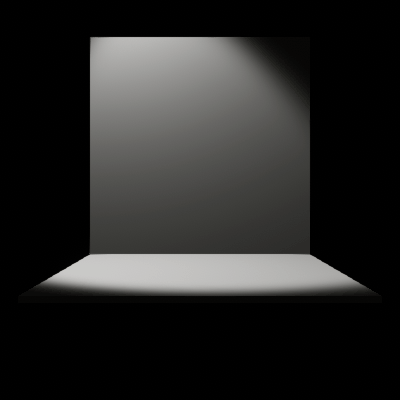

Mes jeux
-

KOMROG
Komrog est un projet de rogue like en 2D ou le but est de se balader dans un donjon tout en récupérant des améliorations pour son arme et le personnage jusqu'à atteindre la fin du jeu.
file_download Télécharger le jeu
-

Sentry-dawn
Sentry down est un jeu créer lors de la Global game jam 2020, c'est un tower defense ou le joueur doit aller lui même construire ses tours et récupérer l'argent qui apparait sur la carte.
file_download Télécharger le jeu
-

Projet Tron
Le projet Tron est un jeu réalisé en cours. C'est un jeu de versus en 3D de 2 à 4 joueurs ou l'on controle une moto et dans lequel on doit éliminé les autres joueurs en leur passant devant grace à une trainée. On est aussi aidé par des power up qui se génère sur le terrain.
file_download Télécharger le jeu
-

Galactic Jumping
Galactic Jumping est un jeu en 2D créer en 3 jours à l'occasion d'un workshop. On controle un petit astronaute qui doit s'aider de la gravité des planètes pour atteindre la fin des niveaux !
file_download Télécharger le jeu
-

Memories Uncovered
Memories Uncovered est un jeu créer lors de la Global Game jam 2021, elle met en scene un personnage qui cherche ses souvenir dans un labyrinthe générer aléatoirement alos qu'il est poursuivie par des monstres.
file_download Télécharger le jeu
Mes autres productions
-

Des vfx
Avec des systèmes de particule


Avec des shaders customes

-
Jeu de plateau
Sentry down est jeu créer lors de la Global game jam 2020, c'est un tower defense ou le joueur doit aller lui même construire ses tours et récupérer l'argent qui apparait sur la carte.